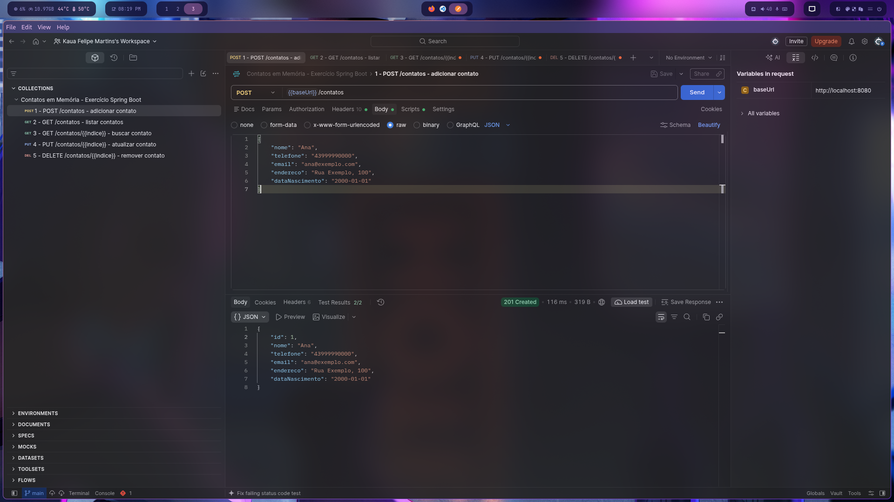
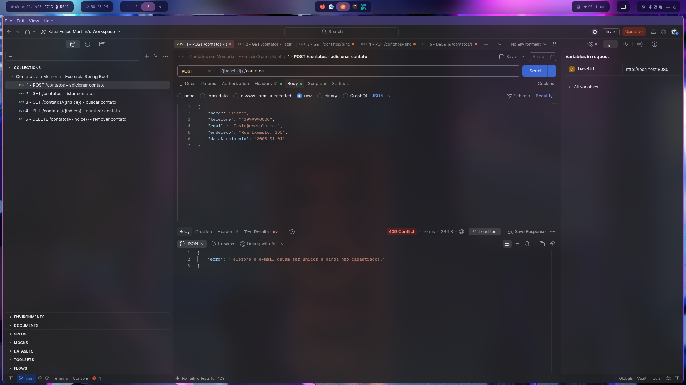

Relatório de Execução - API de Contatos
Persistência de dados com Spring Data JPA e MySQL
POST
1. Criar contato persistido (post-1)
201 CreatedA API recebe o contato Ana e retorna o identificador gerado pelo banco. O registro é salvo na tabela contatos.

POST
2. Tentativa de duplicidade (post-2-error)
409 ConflictTelefone e e-mail já cadastrados violam as restrições de unicidade. O tratamento retorna 409 Conflict.
